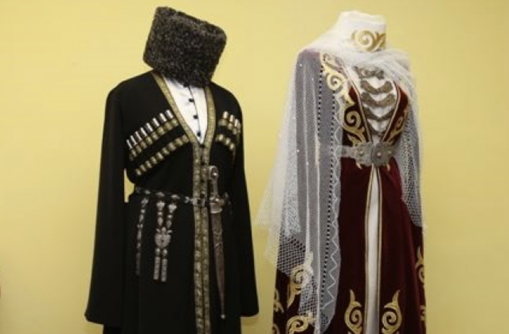

Ингушы - народ, проживающий в основном в Республике Ингушетия на Северном Кавказе, известный своей богатой историей, традиционными башенными сооружениями и глубокими культурными традициями, включающими уникальные обычаи, музыку и танцы.
Ингушы - народ, проживающий в основном в Республике Ингушетия на Северном Кавказе, известный своей богатой историей, традиционными башенными сооружениями и глубокими культурными традициями, включающими уникальные обычаи, музыку и танцы.
Ингушский язык, относящийся к нахско-дагестанской группе языков. Язык характеризуется сложной грамматической структурой с большим количеством гласных и согласных фонем, включая несколько уникальных звуков, которые не встречаются в большинстве других языков.
Традиционная одежда ингушей включает яркие и украшенные элементы, такие как национальные костюмы с уникальными вышивками и орнаментами, отражающими их культурные особенности.
Традиционный быт ингушей организован вокруг сельскохозяйственных работ и ремесел, с упором на гостеприимство и сильные семейные связи.
Ингуши традиционно исповедуют ислам, и их религиозные и духовные практики глубоко укоренены в повседневной жизни, наряду с уважением к старинным традициям и предкам.
Литературное наследие ингушей включает богатый устный фольклор, состоящий из легенд, сказаний и поэзии, передающихся из поколения в поколение и отражающих их историю, культуру и верования. Современная ингушская литература также развивается, отражая как традиционные, так и современные аспекты их культуры.
|  |